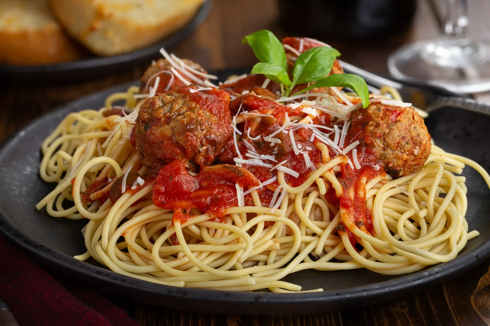

üçΩÔ∏è Receitas Principais
- Clássico Italiano: Almôndegas ao molho de tomate artesanal, com espaguete e
parmesão.

- Molho Barbecue: Almôndegas grelhadas no barbecue, purê de batata e milho na
manteiga.

- Nordestina: Almôndegas temperadas com
baião de dois e vinagrete de feijão
verde.
- Thai: Almôndegas de frango ao curry com arroz jasmim e legumes salteados.

- Vegana Oriental: Almôndegas de lentilha,
cogumelos e tofu ao molho agridoce com
arroz integral.

üçî Sandu√≠ches & Wraps
- Meatball Sub: Sanduíche com almôndegas ao molho de tomate e queijo gratinado.

- Wrap Mediterrâneo: Almôndegas de cordeiro com homus e tzatziki em pão folha.

- Mini Sliders: Três mini hambúrgueres
com molhos variados
(dijon, pesto e barbecue).

üçö Receitas Espressas
- Almôndega Express:Duas almôndegas grandes, arroz, feijão e salada.

- Bowl de Almôndega: Arroz, legumes
grelhados, almôndegas e molho à escolha.

üßí Receitas Infantis
- Mini Almôndegas com Macarrão: Massa infantil com almôndegas pequenas e molho suave.

- Almôndegas Crocantes: Porção empanada